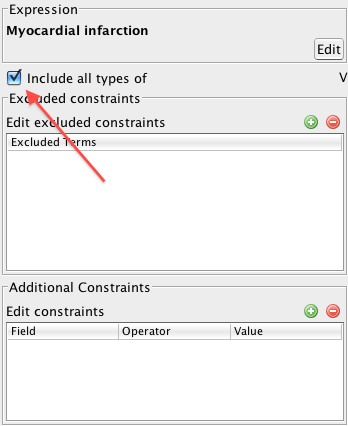

SNOMED CT, Java and MySQL are registered trademarks
Snofyre allows the user to include or exclude subsumption relationships from being used to calculate matching concepts (or expressions) for a given query criterion.
-
Double click the query criterion for which subsumption needs to be changed in
the Query
Authoring Panel.
This displays a window in which the query criterion is displayed at the
top with the subsumption strategy shown as a check box, as shown below.

-
Check or uncheck the Subsume Descendants checkbox to
enable or disable subsumption for the query criterion, as shown below.

Disabling the Subsume Descendants checkbox returns only records matching the specified concept in the query criterion. Enabling Subsume Descendants checkbox on the other hand returns records matching the specified concept in the query criterion and any of its descendants.